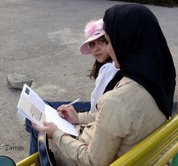

پذيرش > كوچه به كوچه > هم امضا میکنم! هم عضو کمپین میشوم!/ زهره امين


 هم امضا میکنم! هم عضو کمپین میشوم!/ زهره امين هم امضا میکنم! هم عضو کمپین میشوم!/ زهره امين
20 فروردین 1387 - - نسخه قابل چاپ
یک:
رفتهام ماشینمان را بیمه شخص ثالث کنم. مسئول دفتر خانمی جوان و خوشبرخورد است. غیر از من کس دیگری در دفتر نیست. به فکرم میرسد که تا اوراق بیمه را مطالعه و امضا میکنم، دفترچهی کمپین را بدهم بخواند. موضوع دفترچه را میپرسد. میگویم برای برابری حقوق زنان و مردان امضا جمع میکنیم. استقبال میکند و شروع میکند به خواندن دفترچه. با خواندن هر بند سری به نشانهی تأیید و تأسف تکان میدهد.
پر کردن فرم بیمه تقریبا مصادف میشود با تمام کردن دفترچه. میگوید:
 شما امضا کردید. حالا من کجا را باید امضا کنم. شما امضا کردید. حالا من کجا را باید امضا کنم.
با خوشحالی ورقه امضا را در میآورم. امضا میکند.
میشود من هم یک ورقهی خالی داشته باشم برای اعضای خانواده؟
چرا نشود. و به او ورقهای خالی از امضا میدهم.
شما از کجا اینها را میآورید؟ عضو جایی هستید؟ چطور با کمپین آشنا شدید.
از طریق دوستانم. اما خیلیها از طریق همین امضاکردن آشنا شدند که حالا با هم دوستیم.
من هم میخواهم عضو کمپین شوم.
او حالا عضو کمپین و یکی از دوستان خوب من است!
دو:
مسئول سونوگرافی به من میگوید تا نوبتت برسد، هر چه میتوانی آب بخور و راه برو. به زن جوانی هم که کنار من است همین را میگوید. هر دو لیوانمان را از آبسردکن پر از آب میکنیم و راه میرویم. به خودم میگویم چرا من جدا و او جدا. قدمهایم را با او هماهنگ میکنم. با هم گپ میزنیم. فارغالتحصیل یکی از رشتههای مهندسی است و از تبعیض بین زنان و مردان در محیط کار ناراحت است. حرف را به کمپین میکشانم. خوشحال میشود.
وای... من خیلی وقت است دنبال شما میگردم!
کمپین یک میلیون امضا را میشناسی؟
از تلویزیون صدای آمریکا راجع به شما خیلی شنیدهام. کو؟ کجا را باید امضا کنم!
نمیخواهی قبلش کتابچه را بخوانی.
نه میدانم. همه را میدانم.
ورقه را امضا میکند.
اما من دوست ندارم فقط امضا کنم. دوست دارم جزئی از کمپین باشم. میشود؟
چرا نشود. همهی ما همینطور عضو کمپین شدیم. کارگاهی میگذرانیم که برای تمام سوالاتمان راجع به قوانین تبعیضآمیز جواب بگیریم و بعد شروع به جمعآوری امضا میکنیم. ماخودمان جلسات مطالعاتی هم گذاشتهایم.
من هم حتما شرکت میکنم. میشود شماره تلفن همدیگر را داشته باشیم.
او حالا عضو کمپین و یکی از دوستان خوب من است!
سه:
در کلاس ورزشی ثبت نام کردهام که هر ساعتی از روز که بروم مهم نیست. بنابراین هر بار با دوستان جدیدی آشنا میشوم.
هر دفعه دقایقی از وقت ورزشم را به صحبت با خانمهایی که در حال استراحتند درمورد کمپین اختصاص دادهام.
چهرهی زنی حدودا 55 ساله را نگاه میکنم. کمی اخموست و با جدیت مشغول کار با دستگاه ورزشی. آیا حوصله شنیدن حرفهایم را دارد؟ کمی نزدیک به او ورزش میکنم تا کارش تمام شود.
از دستگاه که پایین میآید، خودم را به او می رسانم.
برای تغییر قوانین تبعیضآمیز بین زنان و مردان امضا جمع میکنیم. شما هم مایلید امضا کنید؟
خیره خیره نگاهم میکند.
همین جا بایست تا بیایم!و فوری دور میشود.
ورزشگاه بزرگ است و از دو سالن تو در تو تشکیل شده. او وارد سالن دوم میشود.
یعنی چه! چرا نگذاشت بقیهی حرفم را بزنم. نکند رفت به مسئول ورزش اطلاع بدهد؟
اما باکی نیست. زودتر از همه از مسئولین و مربیان آنجا امضا گرفتهام.
منتظر میمانم. اما خیلی دیر نشد؟ پیش خودم مرور میکنم، خیره نگاهم کرد یا چپچپ؟ باید بمانم.
برای زودتر گذشتن زمان، دو دمبل سبک برمیدارم و درجا ورزش میکنم.
بالاخره میآید. اما نه تنها. پنج نفر خانم همسن و سال خودش را آورده. قشون کشی؟
تا میرسد با همان اخم روی پیشانی میگوید ورقهات را بده ! همه امضا میکنیم!
بیاختیار لبخند میزنم.
شما با کمپین آشنایی دارید؟
نه فقط تو آشنایی!
همه میخندیم.
ورقه دست به دست میگردد و همهشان امضا میکنند. به آنها دفترچه هم میدهم.
زن دست محکمی با من میدهد.
امیدوارم موفق باشید. مواظب خودتون هم باشید.
بعد حال تک تک دستگیرشدگان اخیر کمپین را به اسم میپرسد و میگوید سلام مرا به همه کمپینیها برسان.
او هم از طریق ماهواره از کمپین باخبر است.
روز بعد به صورت تصادفی باز همزمان در ورزشگاهیم. سلام علیک گرمی میکند. میگوید:
راستی من برای13 روز عید میخواهم به شهرستان محل تولدم بروم. ورق خالی میدهی امضا جمع کنم؟
میدهم. او حالا یکی از دوستان خوب کمپینیهاست.

چهار:
در پارک با دوستم نشستهایم و درددل میکنیم. بعد از تمام شدن حرفهایمان تصمیم میگیریم قبل از رفتن به خانه چند تایی امضا جمع کنیم. زوج جوانی روی نیمکت در حال خوردن بستنیهستند. زن باردار است. نزدیک آنها میشویم و در مورد کمپین صحبت میکنیم. هر دو میگویند اجازه بدهید بخوانیم. ورقه را دستشان میدهیم و دور میشویم تا راحت بستنیشان را بخورند و بخوانند. سراغ دو دختر دیگر که روی نیمکت دیگری نشستهاند میرویم. بعد از توضیح ما بعد از خواندن ورقه، بدون هیچ سوالی هر دو امضا میکنند و موفقباشیدی میگویند.
زن و شوهر جوان ورقه را خواندهاند و از ما خودکار میخواهند برای امضا. آنها هم برای ما آرزوی موفقیت میکنند. چند نفر دیگر هم خیلی راحت امضا میکنند.
دختری حدود بیستو ششهفت سالهای به ما نزدیک میشود.
میتوانم بپرسم برای چه منظوری امضا جمع میکنید؟
ورقههای کمپین را نشانش میدهیم و میگوییم یک میلیون امضا برای تغییر قوانین تبعیضآمیز... نمیگذارد حرفم تمام شود.
آهان... دوست داشتم ببینم در چه مورد فعالیت میکنید. نوشتهی مفصلتری در این مورد ندارید.
دفترچهای از کیفم بیرون میآورم و به او میدهم.
با لذتی دفترچه را لمس میکند.
در مورد کمپین چیزی میدانید؟
من خودم وکیلم. دفتر هم دارم. آنقدر قوانین بر ضد زنان است که باعث شده دیگر پرونده در این مورد نگیرم. خودم هم از این بابت متاسفم. اما طاقت دیدن زجر زنان و اینکه من نمیتوانم کار چندانی برایشان بکنم ندارم. از یکی از همکارانم شنیدم تعدادی از زنان دارند بر علیه این قوانین فعالیت میکنند. اما نمیدانستم چه نوع فعالیتی. امیدی برای تغییر ندارم. اما دوست دارم در جلساتتان شرکت کنم. شور و شوقتان را برای جمع کردن امضا از دور دیدم. گفتم شاید شما به من کمک کنید کمی امیدوار شوم... گفتم شما هم مطمئنا کمک خیلی بزرگی برای ما هستید. شماره تلفنی رد و بدل میکنیم.
هنوز دو روز نشده که زنگ میزند و میگوید چرا خبرم نمیکنید. میگویم به خاطر نزدیک شدن تعطیلات عید جلسهی مطالعاتی نداریم. خواهش میکند یادمان نرود. اوایل فروردین هم زنگ میزند و سال نو را تبریک میگوید و دوباره یادآوری...
میدانم او هم به زودی یکی از کمپینیها و دوست خوبی برایمان میشود.
ارسال به
بالاترین
،
توییتر
،
فریندفید
،
فیسبوک
در همين بخش :
 روايت بيست و پنجمين شهريور / نرگس طیبات روايت بيست و پنجمين شهريور / نرگس طیبات
وقتی آتش خاموش شود/فرشته نوبخت
آن گاه که زن شدم / ویژه نامه 8 مارس 1391
چیزی زیر پوست این شهر می جوشد / دلارام علی
گرسنگی / وبلاگ سیب و سرگشتگی
ديگر بخش ها :
طرح یک میلیون امضا
|
مقالات
|
سایت نوشته ها
|
اخبار
|
گزارش كمپين
|
گفت و گو
|
علیه سکوت
|
كوچه به كوچه
|
نامه های شما
|
گزارش ویژه
|
گفتگو با اعضا
|
ویژه سالگرد کمپین
|
تصویر برابری
|
دل آرام علی
|
تریبون
|
مقالات
|
تاریخ شفاهی
|
خارج از چارچوب
|
کتابخانه
|
درباره کمپین
|
کمپین در شهرها
|
کمپین در بند
|
صدای تغییر
|
ویژه 22 خرداد
|
لایحه حمایت از خانواده
|
گالری
|
عشا مومنی
|
امیر یعقوبعلی
|
خدیجه مقدم
|
راحله عسگری زاده و نسیم خسروی
|
پروین اردلان،جلوه جواهری، مریم حسین خواه، ناهید کشاورز
|
زینب پیغمبرزاده
|
سعیده امین، سارا ایمانیان، محبوبه حسین زاده، ناهید کشاورز و همایون نامی
|
احترام شادفر
|
نسیم سرابندی زاده،فاطمه دهدشتی
|
وبلاگ مهمان
|
پرونده خرم آباد
|
دستگیری ها
|
مریم مالک
|
پرستو اللهیاری
|
مهرنوش اعتمادی
|
سمیه رشیدی
|
Other Languages
|
همراهان
|
«فراخوان کمپین ده روز با بهاره هدایت»
| English
|